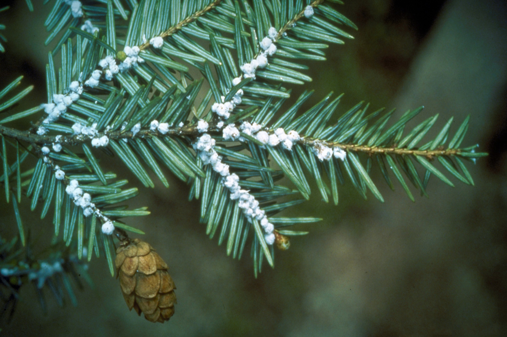

Eastern Hemlock (Tsuga canadensis) that has been infested by Hemlock Woolly Adelgid (Adelges tsugae) Photo credits: Connecticut Agricultural Experiment Station
Hemlock Woolly Adelgid (Adelges tsugae) is an invasive insect native to eastern Asia and was first documented in the western U.S. by entomologist Percy Annand. Western hemlocks are mostly resistant to HWA and it is debated whether or not they are native to western North America. Hemlock Woolly Adelgid was first discovered in the eastern U.S. in the 1950s and has been detrimental to the health of eastern North American hemlock species including Eastern Hemlock (Tsuga canadensis) and Carolina Hemlock (Tsuga caroliniana). Hemlock Woolly Adelgid feeds on hemlocks at the base of the needles, which disrupts nutrient flow and typically causes mortality in 4 to 10 years. HWA infestation is easily identified by the woolly egg sacs on the underside of hemlock branches.
Information obtained from National Invasive Species Information Center, UMass Amherst Extension Landscape, Nursery and Urban Forestry Program